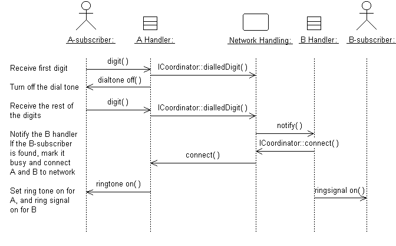
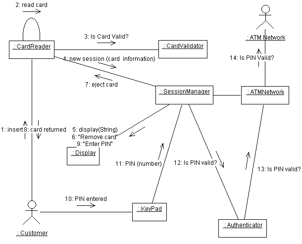
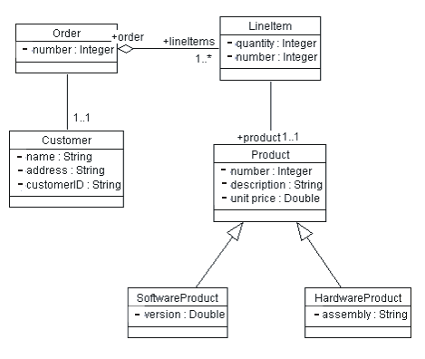

Roles and Activities >
Developer Role Set >
Roles and Activities >
Developer Role Set >
 Designer >
Designer >
 Class Design
Class Design
Roles and Activities >
Developer Role Set >
Designer >
Class Design
Activity:
| ||||||||||||||||
Purpose
|
|
Steps
|
|
| Input Artifacts: | Resulting Artifacts: |
| Role: Designer | |
| Tool Mentor: | |
| Workflow Details: |
Classes are the work-horses of the design effort—they actually perform the real work of the system. The other design elements—subsystems, packages and collaborations simply describe how classes are grouped or how they interoperate.
Capsules are also stereotyped classes, used to represent concurrent threads of execution in real-time systems. In such cases, other design classes are 'passive' classes, used within the execution context provided by the 'active' capsules. When the software architect and designer choose not to use a design approach based on capsules, it is still possible to model concurrent behavior using 'active' classes.
Active classes are design classes which coordinate and drive the behavior of the passive classes - an active class is a class whose instances are active objects, owning their own thread of control.
Start by creating one or several (initial) design classes for the analysis class given as input to this activity, and assign trace dependencies. The design classes created in this step will be refined, adjusted, split and/or merged in the subsequent steps when assigned various "design" properties, such as operations, methods, and a state machine, describing how the analysis class is designed.
Depending on the type of the analysis class (boundary, entity, or control) that is to be designed, there are specific strategies that can be used to create initial design classes.
The general rule in analysis is that there will be one boundary class for each window, or one for each form, in the user interface. The consequence of this is that the responsibilities of the boundary classes can be on a fairly high level, and need then be refined and detailed in this step.
The design of boundary classes depends on the user interface (or GUI) development tools available to the project. Using current technology, it is quite common that the user interface is visually constructed directly in the development tool, thereby automatically creating user interface classes that need to be related to the design of control and/or entity classes. If the GUI development environment automatically creates the supporting classes it needs to implement the user interface, there is no need to consider them in design - only design what the development environment does not create for you.
Additional input to this work are sketches, or screen dumps from an executable user-interface prototype, that may have been created to further specify the requirements made on the boundary classes.
Boundary classes which represent the interfaces to existing systems are typically modeled as subsystems, since they often have complex internal behavior. If the interface behavior is simple (perhaps acting as only a pass-through to an existing API to the external system) one may choose to represent the interface with one or more design classes. If this route is chosen, use a single design class per protocol, interface, or API, and note special requirements about used standards and so on in the special requirements of the class.
During analysis, entity classes represent manipulated units of information; entity objects are often passive and persistent. In analysis, these entity classes may have been identified and associated with the analysis mechanism for persistence. The details of a database-based persistence mechanism are designed in Activity: Database Design. Performance considerations may force some re-factoring of persistent classes, causing changes to the Design Model which are discussed jointly between the Role: Database Designer and the Role: Designer.
A broader discussion of design issues for persistent classes is presented below in Identify Persistent Classes.
A control object is responsible for managing the flow of a use case and thus coordinates most of its actions; control objects encapsulate logic that is not particularly related to user interface issues (boundary objects), or to data engineering issues (entity objects). This logic is sometimes called application logic, or business logic.
Given this, at least the following issues need to be taken into consideration when control classes are designed:
- The use case coordinating behavior becomes imbedded in the UI, making it more difficult to change the system.
- The same UI cannot be used in different use case realizations without difficulty.
- The UI becomes burdened with additional functionality, degrading its performance.
- The entity objects may become burdened with use-case specific behavior, reducing their generality.
To avoid these problems, control classes are introduced to provide behavior related to coordinating flows-of-events
Note that in the latter two cases, if the control class represents a separate thread of control it may be more appropriate to use an active class to model the thread of control.
In a real-time system, the use of Artifact: Capsules is the preferred modeling approach in these circumstances.
Classes which need to be able to store their state on a permanent medium are referred to as 'persistent'. The need to store their state may be for permanent recording of class information, for back-up in case of system failure, or for exchange of information. A persistent class may have both persistent and transient instances; labeling a class 'persistent' means merely that some instances of the class may need to be persistent.
Identifying persistent classes serves to notify the Role: Database Designer that the class requires special attention to its physical storage characteristics. It also notifies the Role: Software Architect that the class needs to be persistent, and the Role: Designer responsible for the persistence mechanism that instances of the class need to be made persistent.
Because of the need for a coordinated persistence strategy, the Role: Database Designer is responsible for mapping persistent classes into the database, using a persistence framework. If the project is developing a persistence framework, the framework developer will also be responsible for understanding the persistence requirements of design classes. To provide these people with the information they need, it is sufficient at this point to simply indicate that the class (or more precisely, instances of the class) are persistent. Also incorporate any design mechanisms corresponding to persistency mechanisms found during analysis.
Example
The analysis mechanism for persistency might be realized by one of the following design mechanisms:
- In-memory storage
- Flash card
- Binary file
- Database Management System (DBMS)
- depending on what is required by the class.
Note that persistent objects may not only be derived from entity classes; persistent objects may also be needed to handle non-functional requirements in general. Examples are persistent objects needed to maintain information relevant to process control, or to maintain state information between transactions.
For each class, determine the class visibility within the package in which it resides. A 'public' class may be referenced outside the containing package. A 'private' class (or one whose visibility is 'implementation') may only be referenced by classes within the same package.
To identify Operations on design classes:
Operations are required to support the messages that appear on sequence diagrams because scripts; messages (temporary message specifications) which have not yet been assigned to operations describe the behavior the class is expected to perform. An example sequence diagram is shown below:

Messages form the basis for identifying operations.
Use-case realizations cannot provide enough information to identify all operations. To find the remaining operations, consider the following:
Do not define operations which merely get and set the values of public attributes (see Define Attributes and Associations); these are generally generated by code generation facilities and do not need to be explicitly defined.
The naming conventions of the implementation language should be used when naming operations, return types, and parameters and their types; these are described in the Artifact: Design Guidelines.
For each operation, you should define the following:
Once you have defined the operations, complete the sequence diagrams with information about which operations are invoked for each message.
Refer to section "Class Operations" in Guidelines: Design Class for more information. Also refer to section "Defining Operations" in Guideline: Designing Classes in Visual Basic for more guidelines regarding Visual Basic®.
For each operation, identify the export visibility of the operation. The following choices exist:
Choose the most restricted visibility possible which can still accomplish the objectives of the operation. In order to do this, look at the sequence diagrams, and for each message determine whether the message is coming from a class outside the receiver's package (requires public visibility), from inside the package (requires implementation visibility), from a subclass (requires protected visibility) or from the class itself or a friend (requires private visibility).
For the most part, operations are 'instance' operations, that is, they are performed on instances of the class. In some cases, however, an operation applies to all instances of the class, and thus is a class-scope operation. The 'class' operation receiver is actually an instance of a metaclass, the description of the class itself, rather than any specific instance of the class. Examples of class operations include messages which create (instantiate) new instances, which return allInstances of a class, and so on.
To denote a class-scope operation, the operation string is underlined.
A method specifies the implementation of an operation. In many cases, methods are implemented directly in the programming language, in cases where the behavior required by the operation is sufficiently defined by the operation name, description and parameters. Where the implementation of an operation requires use of a specific algorithm, or requires more information than is presented in the operation's description, a separate method description is required. The method describes how the operation works, not just what it does.
The method, if described, should discuss:
The requirements will naturally vary from case to case. However, the method specifications for a class should always state:
More specific requirements may concern:
Sequence diagrams are an important source for this. From these it is clear what operations are used in other objects when an operation is performed. A specification of what operations are to be used in other objects is necessary for the full implementation of an operation. The production of a complete method specification thus requires that you identify the operations for the objects involved and inspect the corresponding sequence diagrams.
Refer to section "Defining (UML) Methods" in Guideline: Designing Classes in Visual Basic for more guidelines regarding Visual Basic®.
For some operations, the behavior of the operation depends upon the state the receiver object is in. A state machine is a tool for describing the states the object can assume and the events that cause the object to move from one state to another, see Guidelines: Statechart Diagram. State machines are most useful for describing active classes.
The use of state machines is particularly important for defining the behavior of Artifact: Capsules.
An example of a simple state machine is shown below:

A simple statechart diagram for a Fuel Dispenser
Each state transition event can be associated with an operation. Depending on the object's state, the operation may have a different behavior; the transition events describe how this occurs.
The method description for the associated operation should be updated with the state-specific information, indicating, for each relevant state, what the operation should do. States are often represented using attributes; the statechart diagrams serve as input into the attribute identification step.
For more information, see Guidelines: Statechart Diagram.
Refer to section "Defining States" in Guideline: Designing Classes in Visual Basic for more guidelines regarding Visual Basic®.
During the definition of methods and the identification of states, attributes needed by the class needs to carry out its operations are identified. Attributes provide information storage for the class instance, and are often used to represent the state of the class instance. Any information the class itself maintains is done through its attributes. For each attribute, define the following:
Check to make sure all attributes are needed. Attributes should be justified - it is easy for attributes to be added early in the process and survive long after they are no longer needed due to shortsightedness. Extra attributes, multiplied by thousands or millions of instances, can have a large effect on the performance and storage requirements of the system.
Refer to section "Attributes" in Guidelines: Design Class, for more information on attributes.
For each case where the communication between objects is required, ask the following questions:
Note that links modeled in this way are transient links, existing only for a limited duration, in the specific context of the collaboration - in that sense, they are instances of the association role in the collaboration. However, the relationship in a class model (i.e. independent of context) should be, as stated above, a dependency. As [RUM98] states, in the definition of transient link: "It is possible to model all such links as associations, but then the conditions on the associations must be stated very broadly, and they lose much of their precision in constraining combinations of objects". In this situation, the modeling of a dependency is less important than the modeling of the relationship in the collaboration, because the dependency does not describe the relationship completely, only that it exists.
Associations provide the mechanism for objects to communicate with one another. They provide objects with a "conduit" along which messages can flow. They also document the dependencies between classes, highlighting for us that changes in one class may be felt among many other classes.
Examine the method descriptions for each operation to understand how instances of the class communicate and collaborates with other objects. In order to send a message to another object, an object must have a reference to the receiver of the message. A collaboration diagram (an alternative representation of a sequence diagram) will show object communication in terms of links, as shown below:

The remaining messages will use either association or aggregation to specify the relationship between instances of two classes which communicate. See Guidelines: Association and Guidelines: Aggregation for information on choosing the appropriate representation. For both of these associations, set the link visibility to 'field' in collaboration diagrams. Other tasks include:
Associations and aggregations are best defined in a class diagram which depicts the associated classes. The class diagram should be owned by the package which contains the associated classes. An example class diagram, depicting associations and aggregations, is shown below:

Example Class Diagram, showing Associations, Aggregations, and Generalizations between Classes.
Subscribe-associations between analysis classes are used to identify event dependencies between classes. In the Design Model we must explicitly handle these event dependencies, either using available event-handler frameworks, or by designing and building our own event-handler framework. In some programming languages such as Visual Basic this is straightforward by declaring, raising, and handling the corresponding events. In other languages you might have to use some additional library of reusable functions to handle subscriptions and events; if the functionality can't be purchased, it will need to be designed and built. See also Guidelines: Subscribe-Association.
Classes may be organized into a generalization hierarchy to reflect common behavior and common structure. A common super-class can be defined, from which sub-classes can inherit both behavior and structure. Generalization is a notational convenience which allows us to define common structure and behavior in one place and re-use it where we find repeated behavior and structure. Refer to Guidelines: Generalization, for more information on generalization relationships.
When generalization is found, create a common super-class to contain the common attributes, associations, aggregations, and operations. Remove the common behavior from the classes which are to become sub-classes of the common super-class. Define a generalization relationship from the sub-class to the super-class.
Purpose
|
| Concepts: Concurrency |
One of the difficulties with proceeding use-case by use-case through the design process is that two or more use cases may simultaneously attempt to invoke operations on design objects in potentially conflicting ways. In these cases, concurrency conflicts must be identified and resolved explicitly.
If synchronous messaging is used, execution of an operation will block subsequent calls to the objects until the operation completes. Synchronous messaging implies a first-come first-served ordering to message processing. This may resolve the concurrency conflict, as in cases where all messages have the same priority, or where every message runs within the same execution thread. In cases where an object may be accessed by different threads of execution (represented by active classes), explicit mechanisms must be used to prevent or resolve the concurrency conflict.
In real-time systems where threads are represented by Artifact: Capsules, this problem has still to be solved for multiple concurrent access to passive objects, whereas the capsules themselves provide a queuing mechanism and enforce run-to-completion semantics to handle concurrent access. A recommended solution is to encapsulate passive objects within capsules, in this way avoiding the problem of concurrent access through the semantics of the capsule itself.
It may be possible for different operations on the same object to be invoked simultaneously by different threads of execution without a concurrency conflict; both the name and address of a customer may be modified concurrently without conflict. It is only when two different threads of execution attempt to modify the same property of the object that a conflict occurs.
For each object which may be accessed concurrently by different threads of execution, identify the code sections which must be protected from simultaneous access. Early in the Elaboration phase, identification of specific code segments will be impossible; operations which must be protected will suffice. Next, select or design appropriate access control mechanisms to prevent conflicting simultaneous access. Examples of these mechanisms include message queuing to serialize access, use of semaphores (or 'tokens') to allow access only to one thread at a time, or other variants of locking mechanisms. The choice of mechanism tends to be highly implementation dependent, and typically varies with the programming language and operating environment. See the project-specific Artifact: Design Guidelines for guidance on selecting concurrency mechanisms.
The Design Classes should be refined to handle general non-functional requirements as stated in the Design Guidelines specific to the project. An important input to this step are the non-functional requirements on an analysis class that may already be stated in its special requirements and responsibilities. Such requirements are often specified in terms of what architectural (analysis) mechanisms are needed to realize the class; in this step the class is then refined to incorporate the design mechanisms corresponding to these analysis mechanisms.
The available design mechanisms are identified and characterized by the software architect in the Artifact: Design Guidelines. For each design mechanism needed, qualify as many characteristics as possible, giving ranges where appropriate. Refer to Activity: Identify Design Mechanisms, Concepts: Analysis Mechanisms and Concepts: Design and Implementation Mechanisms for more information on design mechanisms.
There can be several general design guidelines and mechanisms that need to be taken into consideration when classes are designed:
Refer to section "Handling Non-Functional Requirements in General" in Guideline: Designing Classes in Visual Basic for more guidelines regarding Visual Basic®.
You should check the design model at this stage to verify that your work is headed in the right direction. There is no need to review the model in detail, but you should consider the following check-points:
|
Rational Unified
Process
|